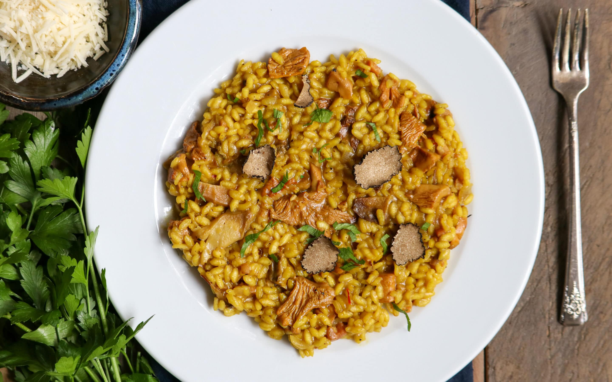

Wild Mushroom Risotto Recipe

Description
It's autumn in the PNW, and beautiful golden chantrelle mushrooms have been foreged along the Oregon coast. While the weather gets cooler, there is nothing like a warm risotto with some beautiful mushrooms unique to this region
This risotto is simple to make, and can be topped with shaved black truffle if preferred.
Ingredients:
- 1-ounce dried porcini mushrooms
- 5 cups Chicken Broth, divided
- 1/2 pound fresh chanterelle mushrooms
- 4 tbsp butter
- 3 ounces Uncured Diced Pancetta
- 2 shallots, diced
- 1 ½ cups Italian Rice (Special For Risotto blend)
- ¾ cup dry white wine
- 1/2 tsp saffron threads
- Salt and pepper to taste
- 1 cup grated Parmigiano-Reggiano cheese, plus more for serving
- Fresh parsley, finely chopped for garnish
- One fresh truffle, shaved for garnish, if desired
Steps:
- Combine one cup of chicken stock and one cup of water in a medium saucepan (we will be using this pan again). Heat on low until liquid is hot. Add dried porcini mushrooms and stir to moisten mushrooms. Let soak for 30 minutes.
- Remove porcini mushrooms from the liquid and reserve soaking liquid in the pan. Coarsely chop porcini mushrooms and set aside. Add remaining four cups of chicken stock to the soaking liquid pan, cover, and hold to a low simmer.
- Meanwhile, use a clean kitchen towel to gently rub chanterelle mushrooms of debris. Do not immerse or rinse mushrooms under running water. Chop chanterelle mushrooms into coarse pieces and set aside.
- Heat a Dutch oven over medium heat. Melt the butter and sauté the pancetta and shallots, stirring often. Add the chopped porcini and the fresh chanterelle mushrooms and sauté for about 5 minutes. Add the rice and stir well, coating the grains with butter. Add the wine and saffron and continue stirring for about 1-2 minutes. Reduce heat to a simmer, add two cups of the warm chicken broth to the rice, and stir gently for 8-10 minutes. When the rice has absorbed most of the liquid, add one cup of warm chicken broth and continue to simmer until the broth is absorbed, stirring every few minutes. Repeat process. After each addition, cook until the rice looks a little dry before adding more broth. Note, you may not use all of the liquid, taste along the way. Cook until the rice is al dente; fully cooked, yet still somewhat firm to the bite. Add salt and pepper to taste. Stir in grated Parmigiano-Reggiano cheese. Serve risotto immediately passing around additional grated cheese and optional shaved truffle and fresh parsley.